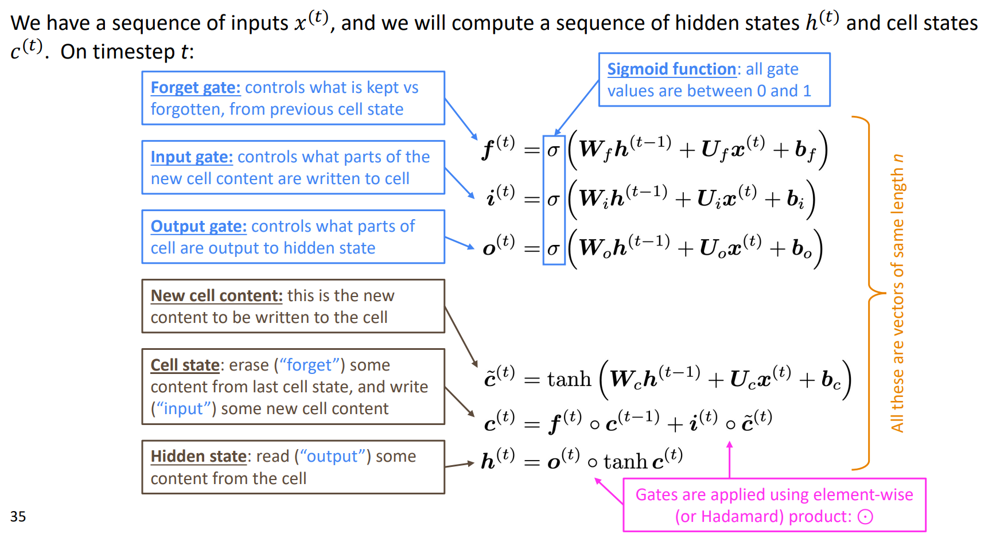
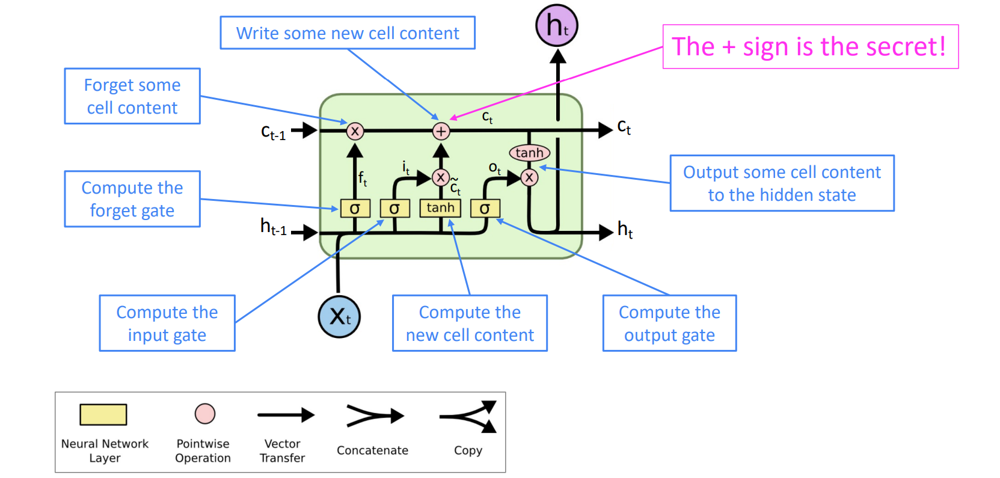

Long Short-Term Memory
LSTM equations
Long Short Term Memory networks – usually just called “LSTMs” – are a special kind of RNN, capable of learning long-term dependencies. They were introduced by Hochreiter & Schmidhuber (1997), and were refined and popularized by many people in following work.1 They work tremendously well on a large variety of problems, and are now widely used.

- LSTM is a good default choice (especially if your dadta has particularly long dependencies, or you have lots of training data); Switch to GRUs for speed and fewer parameters.
- The LSTM architecture makes it easier for the RNN to preserve information over many steps.
- LSTM doesn't guarantee that there is no vanishing/exploding gradient, but it does provide an easier way for the model to learn long-distance dependencies.

References
[1]. http://colah.github.io/posts/2015-08-Understanding-LSTMs/
[2]. LONG SHORT-TERM MEMORY